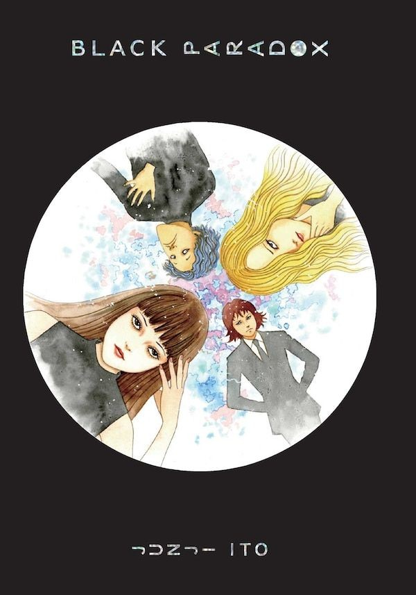
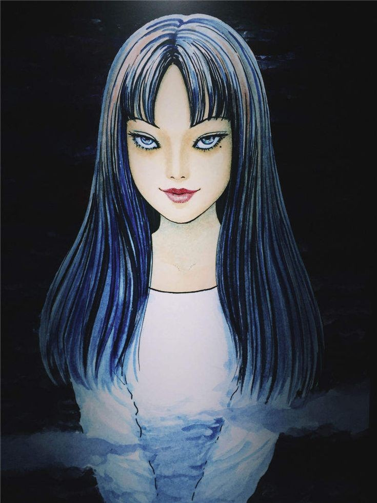
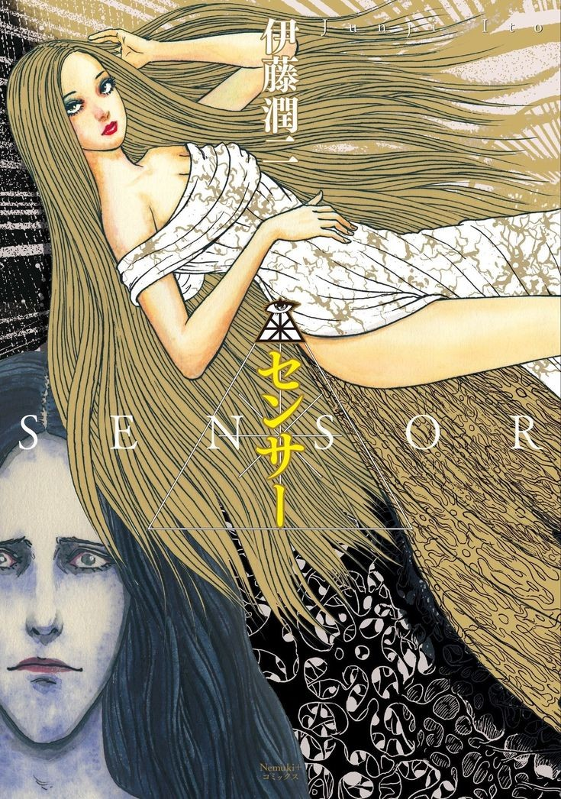

Algunos de sus mangas más conocidos

Gyo

Black Paradox

Tomie

Fragmentos de Horror

La gran mayoría de las adaptaciones cinematográficas ocurrieron a principios de los 2000 siguiendo la historia de una de sus más aclamadas obras 'Tomie' Actualmente y desde hace un tiempo las adaptaciones han sido dirigidas hacia el anime, tratandose multiples historias individuales en un mismo lugar.